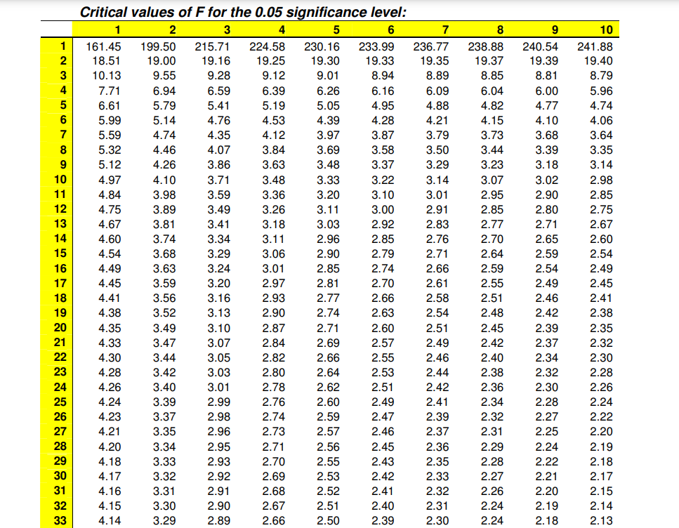

19 How to use F table
The table below gives a model critical values table of F (also known as statistical table of F) at the \(\alpha\) = 0.05 level of significance. Critical values of F can be generated now a days using softwares (Microsoft Excel, R)
- Obtain your F-ratio from ANOVA or using the formula.
- This has (x,y) degrees of freedom associated with it. For example, in ANOVA there are treatment degrees of freedom (x) and error degrees of freedom (y)
- Go along x columns, and down y rows. The point of intersection is your critical F-ratio.
- If your obtained value of F is equal to or larger than this critical F-value, then you can reject the null hypothesis stating all the population means are equal with 100(1-\(\alpha\))%, here 100(1-0.05) % = 95% confidence.
- An example: If you obtain an F ratio of 3.26 with (2, 24) degrees of freedom. Go along 2 columns and down 24 rows. The critical value of F is 3.40. My obtained F-ratio is less than this, and so I conclude that there is no enough evidence to reject null hypothesis.

Figure 19.1: A model critical value table of F at alpha=0.05
Click here to download full statistical table
19.1 Generate critical value of F using excel
To find the F critical value in Excel, you can use the F.INV.RT() function, which uses the following syntax:
= F.INV.RT(probability, deg_freedom1, deg_freedom2).
for example for F(2, 24) at \(\alpha\)=0.05, Excel function will be > = F.INV.RT(0.05, 2, 24).